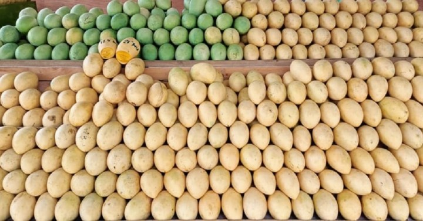
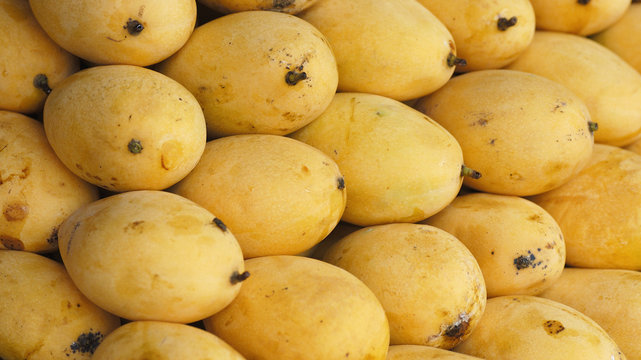
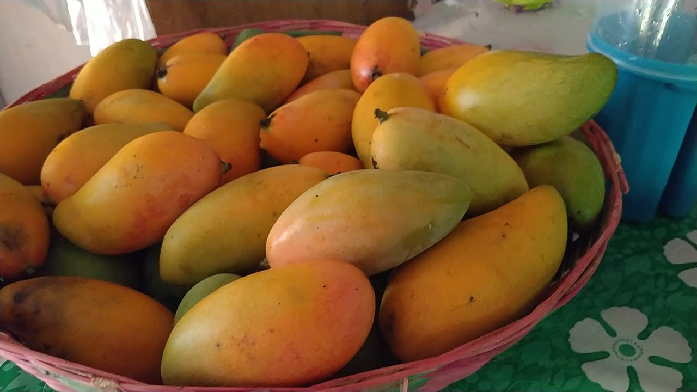
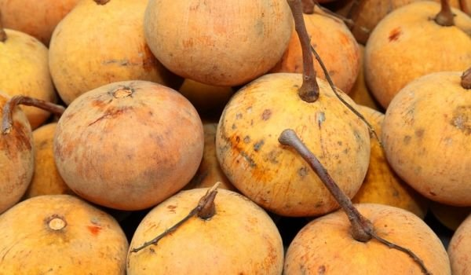
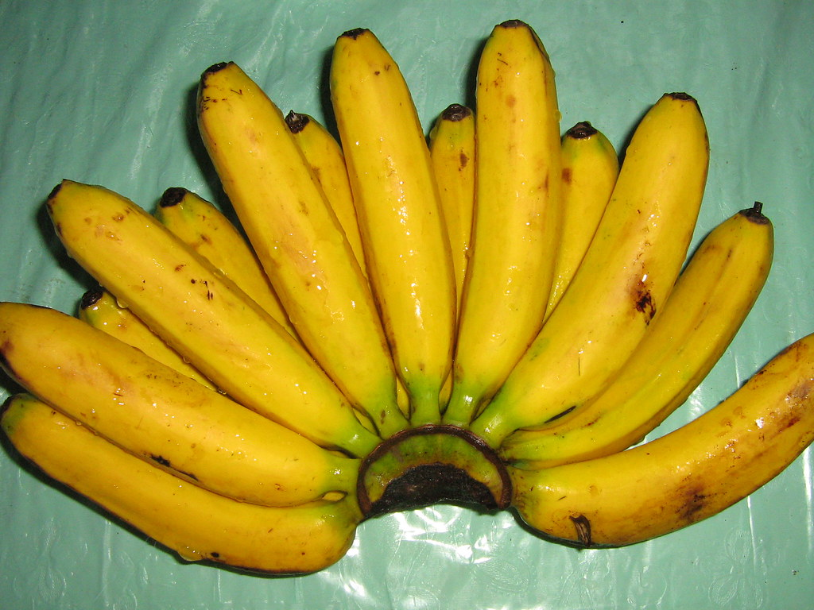
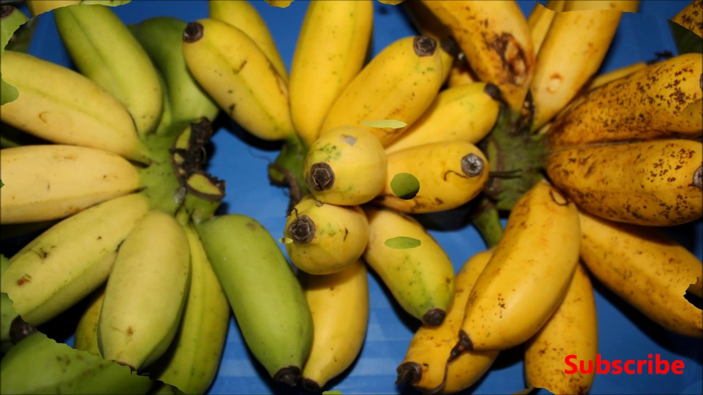
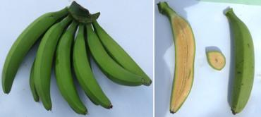
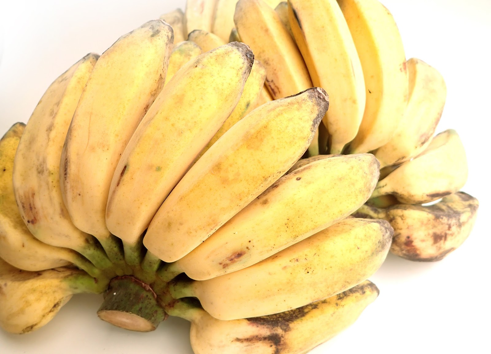
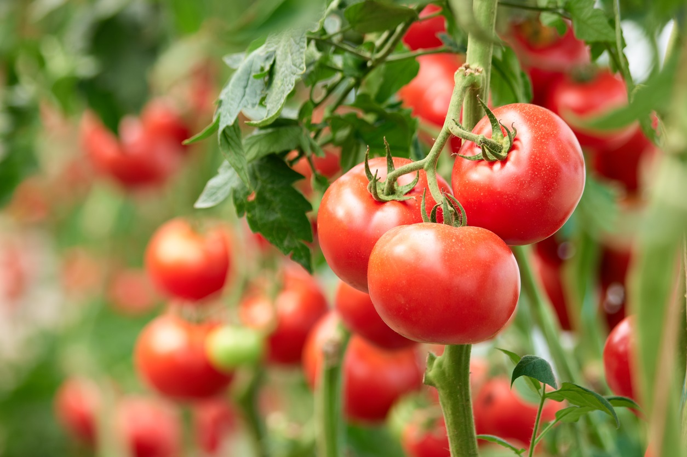
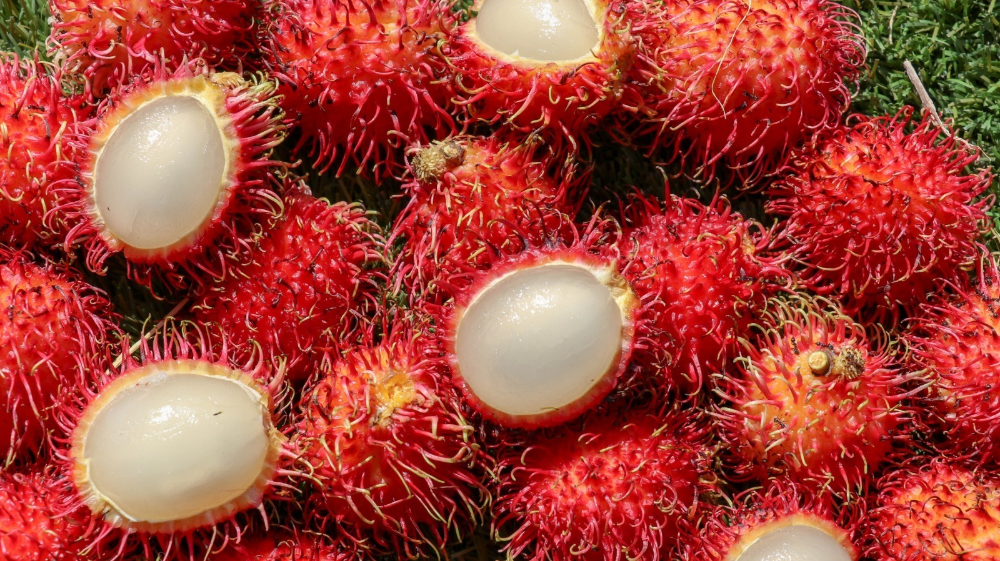

Banana (Cavendish Banana)
Banana (Pisang Raja Banana)
Banana (Red Banana)
Banana (Lady Finger Banana)
Banana (Blue Java Banana)
Banana (Plantain Banana)
Banana (Manzano Banana)
Banana (Burro Banana)
Banana (Barangan Banana)
Banana (Goldfinger Banana)
Mangifera Indica, also known as mango, is the national fruit of the Philippines, which is farmed on more than 7 million mango trees by about 2.5 million smallholder farmers. Mangoes are a highly valuable crop with significant economic benefits for both the rural and national economies when compared to other crops grown in the Philippines, such as rice, corn, coconut, and sugarcane.
There are three well-known variety of mango in the Philippines. These are Carabao Mango, Pico and Katchamita (also known as Indian Mango).
Carabao or Champagne mango is the most popular because of its sweetness and exotic taste The 1995 edition of the Guinness Book of World Records listed the mango variety as the sweetest in the world. Carabao mangoes have a diameter of 8.5 cm (3 14 in) and a length of 12.5 cm (5 in). These kidney-shaped fruits can range in length from short to extended. When fully mature, the fruit is a vivid yellow with green undertones. Rich yellow in color, the flesh has a soft melting quality and is strongly scented. It is polyembryonic, just like other mangoes from Southeast Asia (in contrast to Indian-type mangoes). It is named after the carabao, the Philippine national animal and a native Filipino breed of domesticated water buffalo. 
The Pico mango, also spelled piko and also referred to as padero, is a Philippine-grown type of mango. It is among the most commonly cultivated mango in the Philippines, along with the Carabao mango. Pico mangoes are extremely elongated fruits that can grow up to 12.5 centimeters (4.9 in) long but are only about 8 centimeters (3.1 in) in diameter. Comparatively speaking, it is noticeably flatter than the Carabao mango. Fruits are light yellow to light orange when they are ripe. Fruits that are ripe have tasty flesh that is a bright shade of orange that typically turns scarlet near the tips. Though tender, the flesh is not as soft as that of Carabao mangoes.
Fruit is small and short oval in shape, measuring approximately 8 cm in length and 6.5 cm in width. When mature, skin is silky and green to yellow-green. Even before it has fully ripened, the flesh is deep yellow, luscious, subacid, and very low in fiber. Large and thick seed. Filipinos typically enjoy the fruit before it fully ripens, while it is still green. The tree is abundant and a consistent bearer.
The roots of the mango are not harmful, but it develops to a respectable size and throws a thick shadow. It needs perfect air drainage and full sun. It thrives best in the summit or center of a slope. In open regions, a windbreak should be provided. Also, the trees could require staking. It requires the shade of other trees in areas with high heat exposure. For the most heat, plant against a south wall or in an area surrounded by asphalt in the garden or close to the ocean. To prevent disease in the greenhouse, ample light and unrestricted airflow are essential.
Mangoes may grow in practically any well-drained soil, whether it is sandy, loamy, or clay, but they shouldn't be planted in heavy, soggy soils. The ideal pH range is between 5.5 and 7.5. They can tolerate alkalinity to a certain extent. Mangoes require deep soil to accommodate their vast root systems in order to thrive well. From light sandy loams to red clay soils, mangoes can be cultivated on a variety of soils. The ideal range for soil pH is 5.5 to 7.5. The finest fruit quality and yield come from deep rich soils. It is advised to use well-drained soil. To avoid water logging, moderately sloped areas are also advised. Deep soils without impermeable layers enable the growth of deep taproots that help plants withstand wind and drought.
Mangoes thrive in the lowland tropics' seasonally wet/dry climate zones. The homogeneous beginning of flowers during a dry and/or cool season tends to coordinate the bloom and harvest. Mango stops growing at temperatures below 55-60 oF but does not reach a totally dormant state. When temperatures are below 60 or above 100°F during flowering, flowers may abort, pollen viability may be lost, and occasionally seedless fruit may emerge.
High density plants can be spaced apart by approximately 5 x 3, 5 x 2, 3 x 2, or 2.5 x 2.5 meters. To improve the initial production, another tree can be put between the 200 square meter mango space and the center. When the crowd is high, the other tree can be cut down.
The mango season in the Philippines begins in March and ends in June. Flower induction is from November to February and the off season prodution is from March to October
Mango Seeding Planting: Remove the plant from the soil or pot with the earthball still in place. After removing enough soil to fit the root-ball, the plant can be set in the pit's center with the aid of a planting board. The root ball is then completely encircled by the moist soil of the pit to complete the planting process. The plant is then carefully watered in a small basin. The planting shouldn't be done so high that the top roots are visible. It is always preferable to set it at the same depth or height that it was in the nursery bed or seedling bag.
One of two palatable fruits found in the Meliaceae, or Mahogany family, the santol fruit is botanically known as Sandoricum koetjape. The fleshy fruits, which are extensively grown throughout Southeast Asia's tropical lowlands and are popular for their sweet and sour flavor, are sold as a raw snack in fresh markets.
Santol was only introduced in the Philippines, but is now fully established in the country. It is well known in the Philippines and can be found in almost every state. Planted or semi-cultivated, abundant in secondary forests. Insects, birds, and bats help this tree to propagate because it disperses the seeds after consuming the fruit, and the seeds grow effortlessly when landed in favorable environmental conditions. Grows to 300 meters in height. It is often planted alongside other wood and resin-producing trees for export to riparian forests. Santoor can also be grown in backyards, thrives in a variety of soil types in both dry and wet areas of the Philippine lowlands, and is available nationwide, ensuring it reaches maturity with minimal management.
It is not required to have extremely fertile soils, but there should be good drainage. Alkaline soils cause micronutrient deficits, especially for iron, and a pH of 6.5 is ideal.
It is a tropical plant that can thrive and bear fruit up to heights of 1200 m with only 800 mm of annual precipitation within 8 degrees of the equator. It is also relatively cold- and drought-tolerant. A mean yearly temperature of 22°C and a hot, monsoonal climate are excellent; trees become deciduous in colder climates. 40 degrees Celsius won't harm mature trees.
The planting distance between each other is 20 to 25 feet (6.1 to 7.6 m). For better growth, it needs fertilizer twice a year. Although some cultivars only require 3 or 4 years of age, seed trees typically begin to bear fruit at 5 or 7 years of age. The santol tree produces a lot of fruit.
The season of Santol in the Philippines is from July to September.
When kept in a damp medium like sphagnum moss, seeds are refractory and can only be preserved with a certain amount of viability. Although they develop quickly, seedlings have a wide range of tree and fruiting traits, making them best suited for grafting. Inarching, cleft and whip grafts, as well as shield budding, all produce trees with a bushier canopy and good results. Marcotting is sluggish (5-6 months). Before grafting, seedling rootstocks should be 1-2 years old with stem diameters greater than 5-6mm.
Bananas are one of the most significant fruit crops in the world and belong to the genus Musa in the family Musaceae. The tropics are where the banana is grown, and while it is primarily consumed there, it is prized for its flavor, nutritional content, and year-round availability.
There are four main types of bananas grown widely in the Philippines: Lacatan, Latundan, Bungulan and the small Saba or Cardaba variety.
Banana varieties from the Philippines that are diploid are known as Lakatan or Lacatan. Along with the Latundan and Saba bananas, it is one of the most popular cultivars of banana in the Philippines.
A triploid hybrid banana cultivar of the AAB "Pome" group from the Philippines, the Latundan banana is also known as the Tundan, silk banana, Pisang raja sereh, Manzana banana, or apple banana. Along with Lacatan and Saba bananas, it is one of the most popular banana cultivars in the Philippines and Southeast Asia. Its Malaysian name is pisang rastali.
Popular Cavendish cultivar "Bungulan" hails from the Philippines, where it is also called "Bongolan," "Balungun," and "Bangalun," among other names. It is a tall Cavendish that Norman Simmonds believes is identical to Pisang Masak Hijau', which gets its name from the fact that its fruits are still green when they are fully ripe.
is an ABB triploid hybrid banana cultivar that was developed in the Philippines. Despite the fact that it may also be eaten raw, it is predominantly a cooking banana. It is one of the most significant varieties of banana used in Philippines cooking. It is also occasionally referred to as the "cardaba banana," however this term is actually more appropriately used to refer to the cardava, a really similar cultivar that is also included in the saba subgroup.
Banana plantations thrive in regions with an annual rainfall average of 4000 millimeters (mm).
Banana-friendly soil should be between 0.5 and 1 meters deep, rich, fertile, well-drained, moisture-retentive, and abundant in organic matter. pH levels should be between 6.5 and 7.5. The greatest soil types for growing bananas are volcanic and alluvial.
The ideal temperature for the crop is between 27 and 30 degrees Celsius. Bananas may grow from sea level to 1,800 meters above sea level. When subjected to excessive water, it is prone to root rot. Typhoon belts are not suitable locations for plantations.
Generally, saba requires a wider spacing. Distance of planting can be 4-7 meters.
The sweet fruit is available from September to December
Suckers are set on field in vertical position, then covered with surface soil. Compost material added to the soil enhances the recovery and growth of the new plants. The soil is stumped around each base and watered regularly. During dry months, irrigation, if possible, is advised.Planting is the best at the start of the rainy season.
The tomato (Solanum lycopersicum), often referred to as "Kamatis" in the Philippines, is an edible, generally red, savory fruit that grows on a plant. The tomato fruit is used in a variety of recipes, drinks, and sauces in addition to being eaten raw. It is considered a vegetable for culinary reasons even though it is technically a fruit, which has led to some confusion.
Give your tomato plants a great, sunny area to grow. To get out their greatest flavors, tomatoes require at least 6 to 8 hours of sun daily. Most tomato plants will require staking, trellising, or cages to keep them off the ground.
The type of soil used to grow tomatoes doesn't really matter to them. Like the majority of garden vegetables, they thrive in fertile, well-drained soil with a pH range of 5.8 to 7.0. Before planting, add several inches of organic compost or old animal manure to the top 4 to 8 inches of soil.
Tomatoes do best at temperatures between 55 and 85 degrees Fahrenheit. In general, tomatoes won't set fruit when temperatures above 85 degrees, and they could struggle to set color in the heat, so check the plant tags for advice on the kinds you plant. Tomatoes need a climate that is chilly, dry, and a temperature between 21 and 24 °C. for chilly areas plant from September and January, for lowland regions from November to February.
After irrigation water has been run in the furrows, plant seedlings at a distance of 0.50 meters between hills and 1.0 or 0.75 meters on rows or in furrows. Transplant 25-day-old seedlings for the dry season.
n the Philippines, tomatoes typically grow all year round. However, in the height of summer, these plants are hampered by the intense heat, and the blossoms just wither away.
Seeds should be soaked overnight prior to sowing. Before sowing, dry the seeds immediately or naturally. Add mixed medium to the seeds tray before planting one. Cover one seed each hole with 0.5 cm of soil. Water is followed by fine soil. Plant the seedlings between 25 and 30 days after emergence.
The fruit rambutan, or Nephelium lappaceum, is indigenous to Southeast Asia. It thrives well in tropical areas like those in Malaysia and Indonesia and can grow in a tree up to 80 feet (27 meters) tall. The golf-ball-sized fruit, known as a rambutan, is named after the Malay word for hair because its red and green shell is covered in hairs. Its distinctive look is frequently contrasted with that of a sea urchin.
Most regions of the Philippines, including the Ilocos where there is a distinct wet and dry season, are suitable for growing rambutan.
Rambutan grows best on loam soil. Planting can be done with grafted saplings. Make holes that are 3 feet long, 3 feet wide, and 3 feet deep. 40 feet should separate any two trees from one another. The ideal pH range for soil is 4.5 to 6.5. Water logging is sensitive to rambutan.>
The typical biophysical range for rambutan is 0 to 600 m above sea level, 22 to 35 °C for the annual average temperature, and 2000 to 3000 mm for the annual average rainfall.
Planting spacing on farms with rich soil should be at least 10 meters. The spacing between trees may be 8 meters if the soil is poor.
It is best eaten when it is bright red in color, which means it's ripe and sweet. They are in season from August to October.
Plant the rambutan seed flat in a tiny pot with drainage holes and fill it with organic soil that has been improved with sand and organic compost. After planting the seed, lightly cover it with earth. The seed must germinate for between 10 and 21 days.